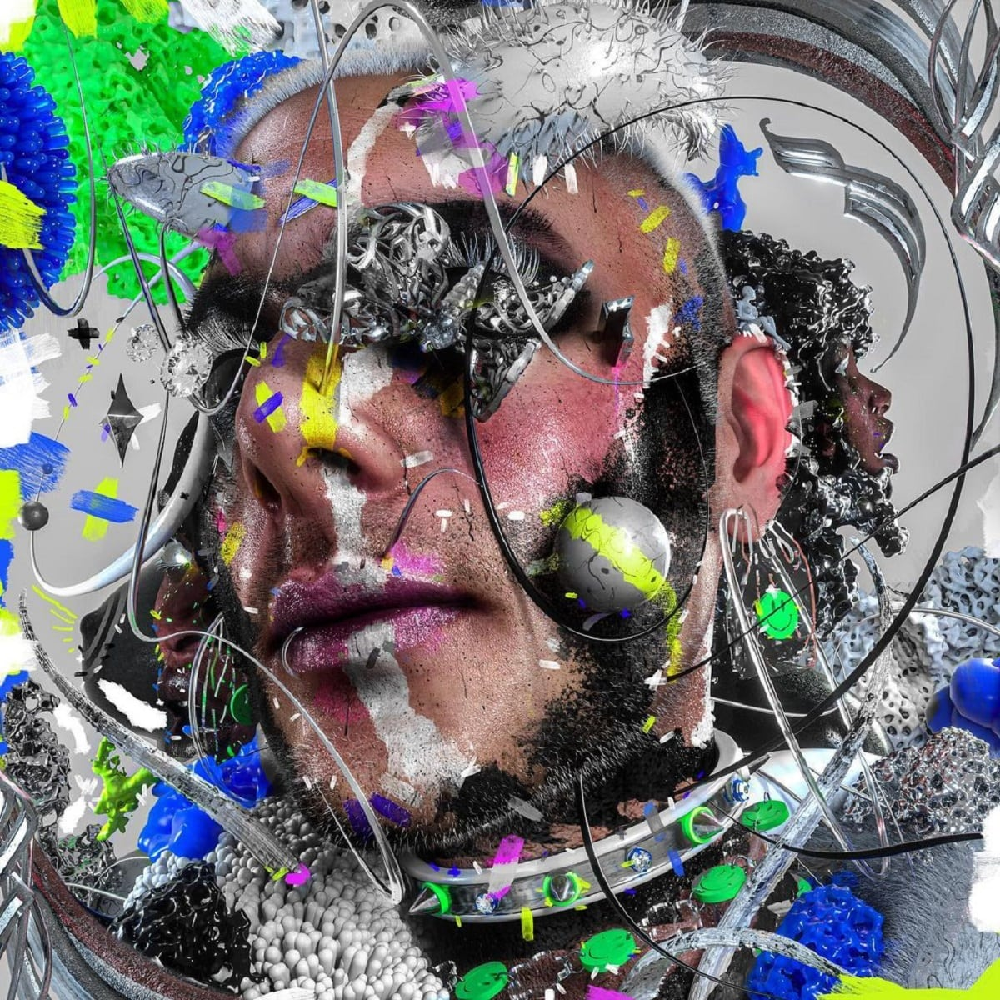

Es imposible tratar de catalogar o definir la obra de Catriel Guerriero y este nuevo material lo vuelve a confirmar. Leé nuestra review y escuchalo acá.
A principios del 2020, con la llegada de la pandemia, la dupla de Ca7riel y Paco Amoroso encontró el hueco perfecto para escabullirse de las obligaciones y enfocarse cada uno en su proyecto personal. Cato se alió con Tomy Sainz en la producción, y juntos le sacaron jugo al hermetismo de la situación para bajar a tierra ideas voladas y materializarlas en lo que hoy conocemos como El disko.
Es imposible tratar de catalogar o definir la obra de Catriel Guerriero y este nuevo material lo vuelve a confirmar. Tanto su música como su personalidad coquetean con elegancia entre dos mundos antagónicos. Lo sucio y lo salvaje magnetiza con lo fino y lo complejo; lo terrenal se enamora de la psicodelia y todo se vuelve un concepto abstracto pero adictivo.
El disko es una demostración pura de esa dualidad, donde el pibe metalero y guitarrista virtuoso se pone a experimentar con programaciones y autotune; y le sale genial. Lejos de ser una provocación (algo que le encanta), son las ansias de alguien desprejuiciado por hacer lo que le gusta y lo que mejor le sale.
Desde su comienzo, en los primeros segundos de "Muy bien", con un sample híbrido entre "Luna de miel en la mano" y "Lucy in the Sky with Diamonds", las intenciones quedan claras: vamos a tener a Ca7riel en estado puro. Ese mismo tinte lisérgico e inquieto continua en "Bad Bitch" y "U.u", acompañados por riffs pegadizos que, junto al beat, encaran un groove estridente.
En la otra cara de la moneda aparece el lado más contemplativo y blando de Cato, que, entre la noche y el humo, engatusa al amor para una velada indecorosa. Así suceden "Donde Tai", "Chanel Maconha" y "Nunca me atiende". Tampoco pasa desapercibida "Souvenir", una balada lenta e íntima, donde la voz de Catriel y su guitarra son las protagonistas.
Finalizando El disko, y como no podía ser de otra forma, aparece la electrónica más violenta, con trazos de dubstep, en "Keyhole" y "Sin Sublow", tracks donde también colaboró y dejó su marca Yalve. Es curioso pensar que todo empezó con "Polvo" y concluye de igual forma, como la vida misma: la manera en que somos concebidos y lo que terminamos siendo una vez que morimos. Casi que parece un guiño escondido de esos a los que Cato nos tiene acostumbrados. Es el broche de oro para cerrar una obra auténtica, conceptual y muy representativa.